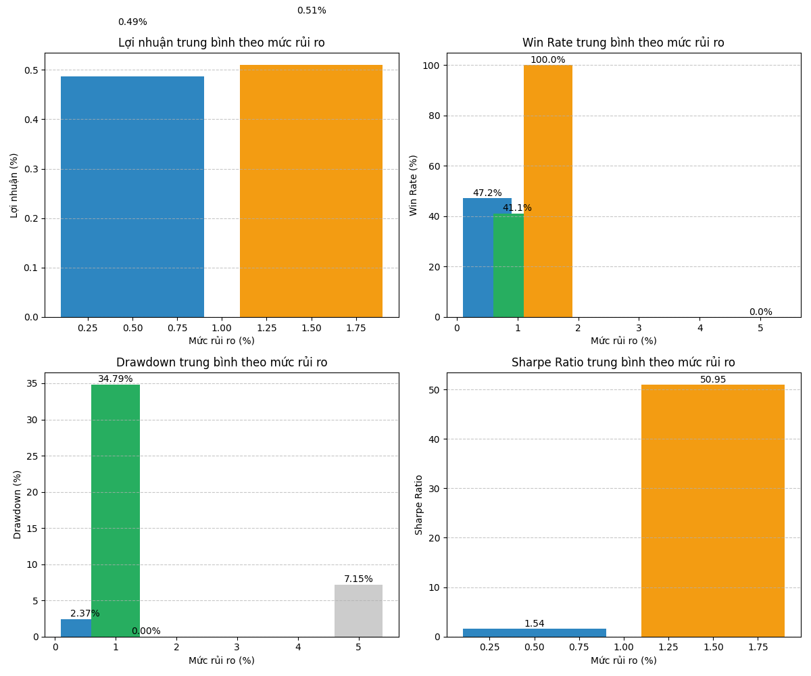
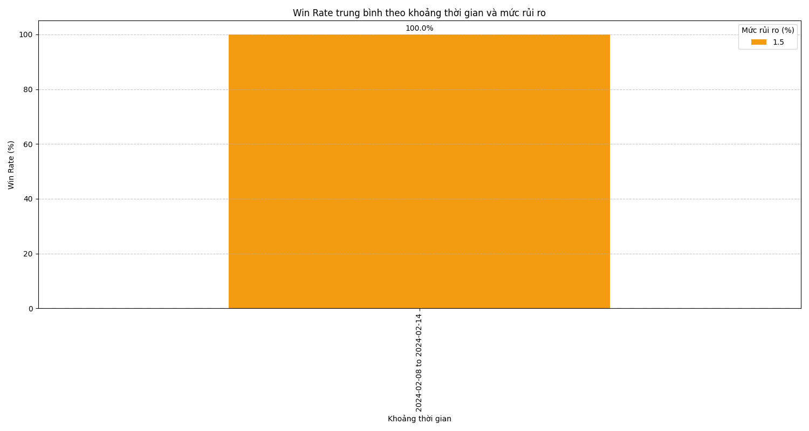
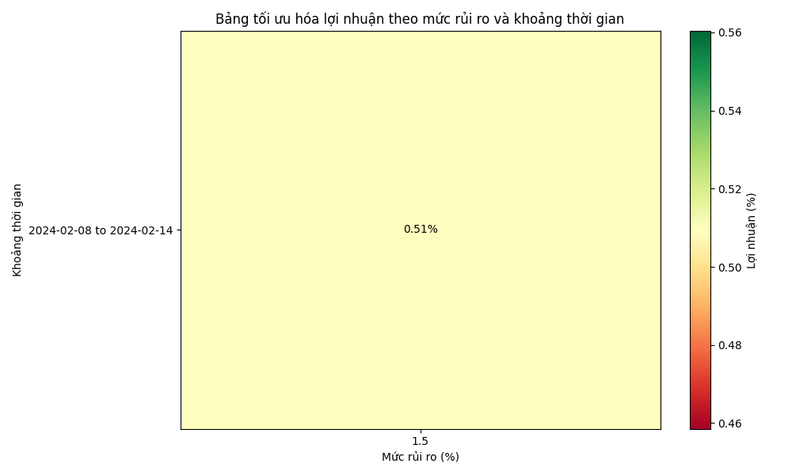
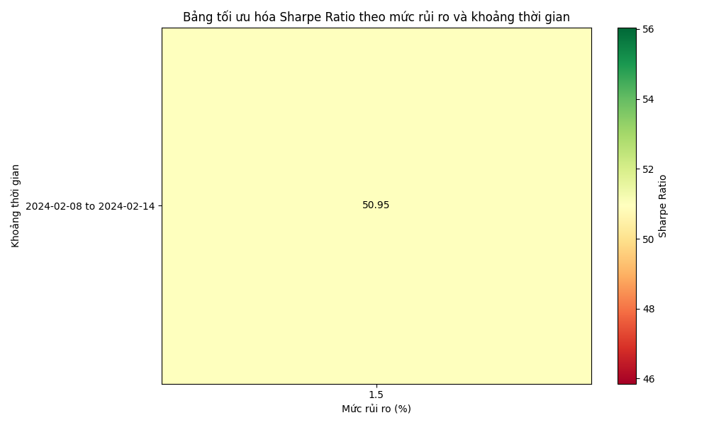

Báo cáo phân tích mức rủi ro tối ưu
Thời gian tạo: 2025-03-06 13:21:26
1. Tổng quan hiệu suất theo mức rủi ro
| Mức rủi ro (%) |
Lợi nhuận TB (%) |
Độ lệch chuẩn (%) |
Win Rate TB (%) |
Drawdown TB (%) |
Sharpe Ratio |
Số test |
| 0.5% |
0.49% (±nan%) |
nan% |
47.17% |
2.37% |
1.54 |
0 |
| 1.0% |
nan% (±nan%) |
nan% |
41.09% |
34.79% |
nan |
0 |
| 1.5% |
0.51% (±nan%) |
nan% |
100.00% |
0.00% |
50.95 |
1 |
| 5.0% |
nan% (±nan%) |
nan% |
0.00% |
7.15% |
nan |
0 |
2. Mức rủi ro tối ưu theo từng tiêu chí
| Tiêu chí |
Mức rủi ro tối ưu |
Giá trị |
| Lợi nhuận cao nhất |
1.5% |
0.51% |
| Win Rate cao nhất |
1.5% |
100.00% |
| Drawdown thấp nhất |
1.5% |
0.00% |
| Sharpe Ratio cao nhất |
1.5% |
50.95 |
3. Biểu đồ phân tích
Tổng quan hiệu suất theo mức rủi ro

Lợi nhuận theo khoảng thời gian và mức rủi ro
Win Rate theo khoảng thời gian và mức rủi ro

Bảng tối ưu hóa lợi nhuận

Bảng tối ưu hóa Sharpe Ratio

So sánh phân phối lợi nhuận giữa các mức rủi ro

4. Kết luận và đề xuất
Dựa trên phân tích các mức rủi ro khác nhau, chúng ta có thể rút ra các kết luận sau:
- Mức rủi ro tối ưu cho lợi nhuận cao nhất: 1.5%
- Mức rủi ro tối ưu cho win rate cao nhất: 1.5%
- Mức rủi ro tối ưu cho drawdown thấp nhất: 1.5%
- Mức rủi ro tối ưu cho Sharpe ratio cao nhất: 1.5%
Đề xuất:
Mức rủi ro cân bằng nhất (xuất hiện nhiều nhất trong các tiêu chí): 1.5%
Lý do:
- Mức rủi ro này mang lại lợi nhuận cao nhất (0.51%)
- Mức rủi ro này mang lại win rate cao nhất (100.00%)
- Mức rủi ro này mang lại Sharpe ratio tốt nhất (50.95)
- Mức rủi ro này cung cấp sự cân bằng tốt giữa:
- Lợi nhuận: 0.51%
- Win rate: 100.00%
- Drawdown: 0.00%
- Sharpe ratio: 50.95